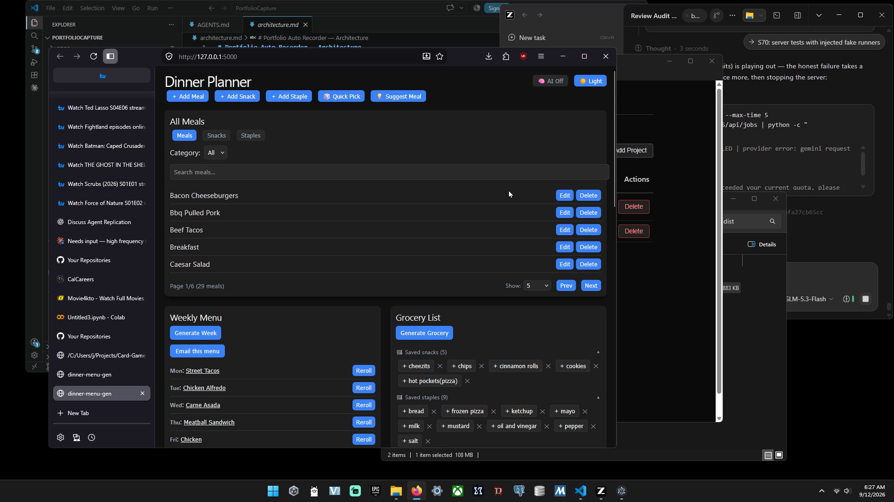
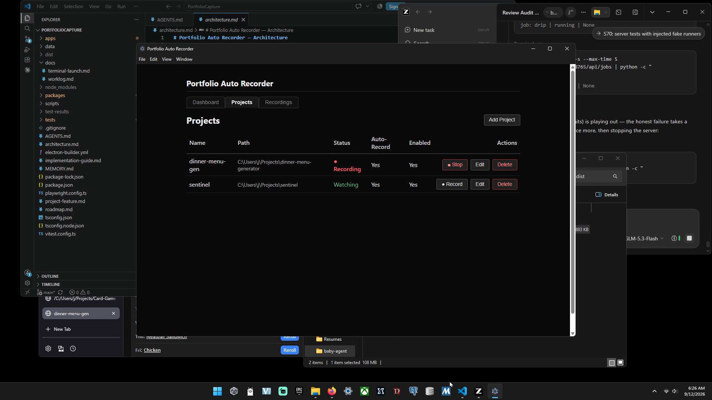
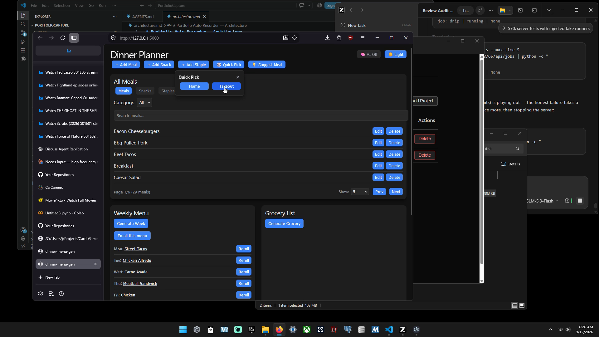
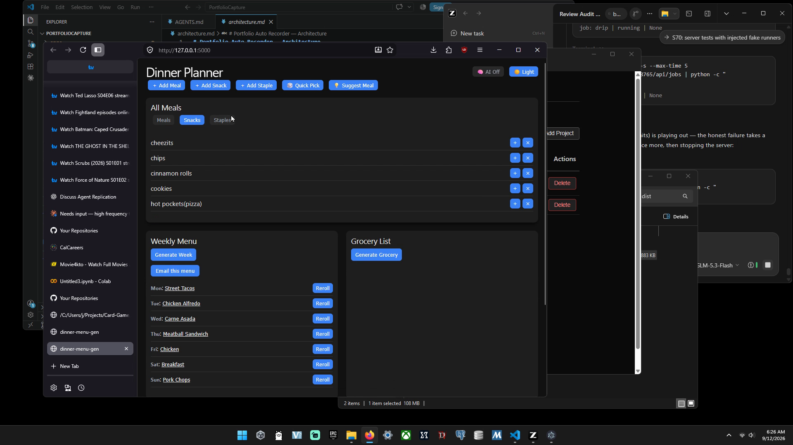
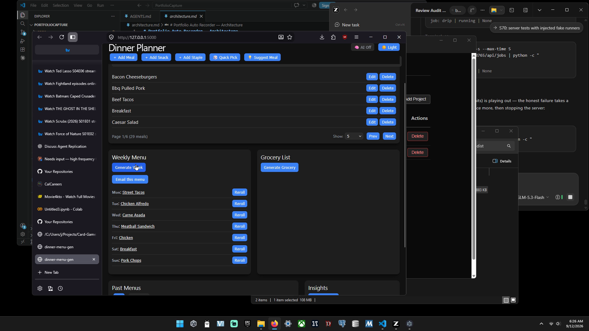

A simple, local-first dinner planning app that answers **"What's for dinner tonight?"**





A local-first, privacy-respecting personal software operations platform that continuously understands, maintains, tests, documents, and analyzes the user's software projects.